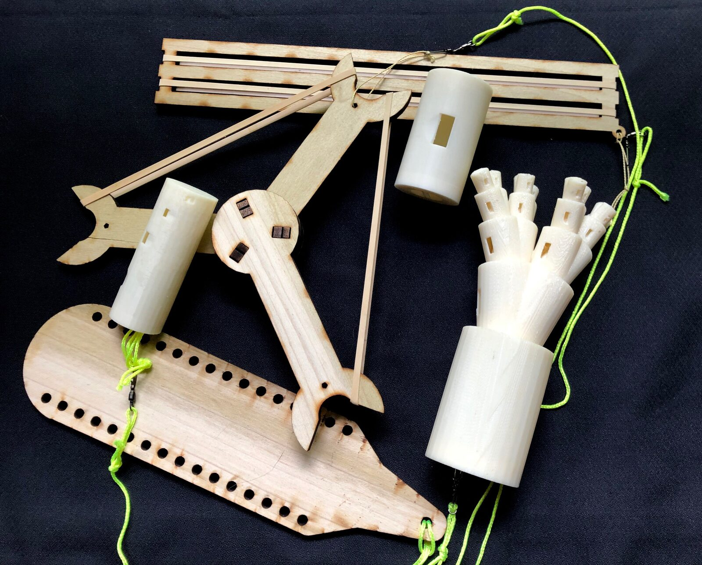
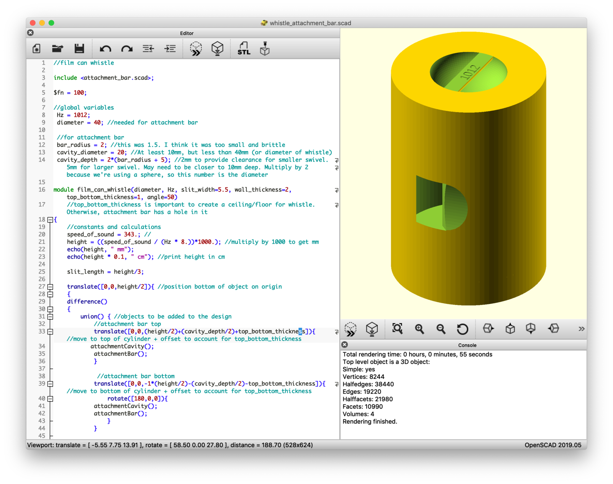
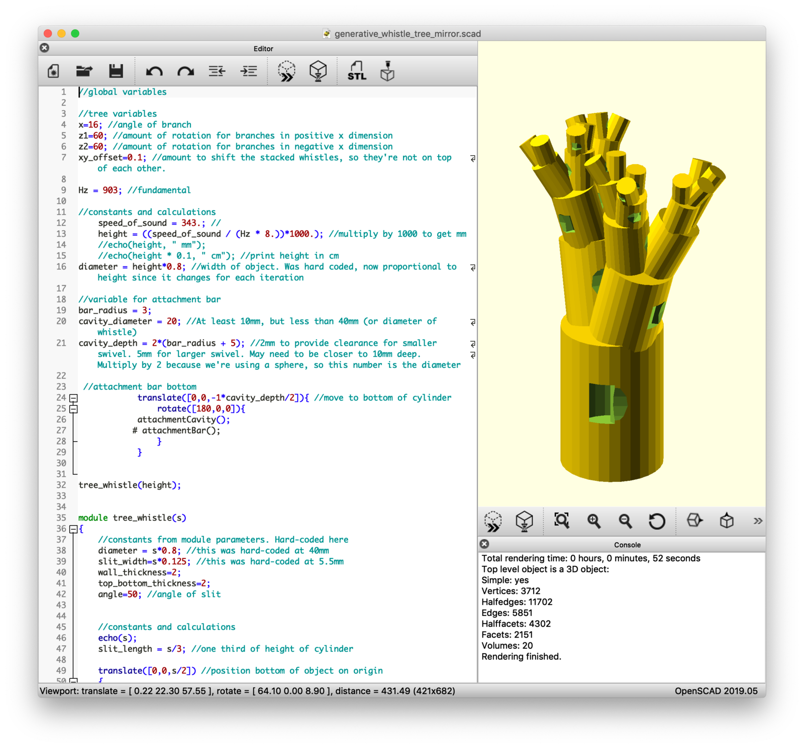
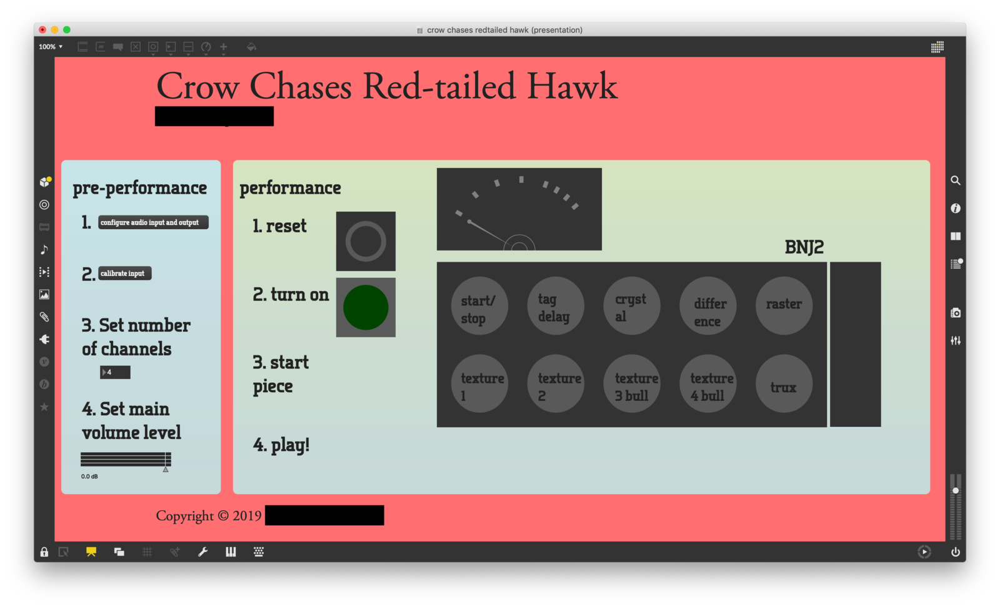
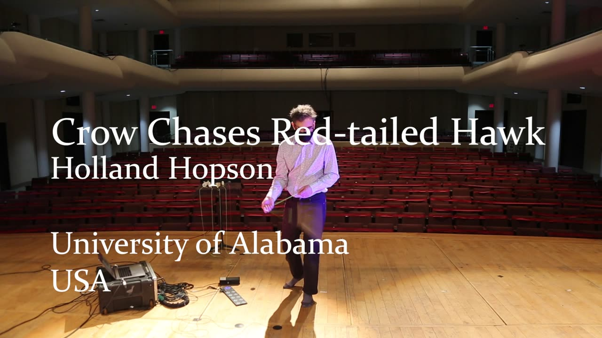

Crow Chases Red-tailed Hawk
PROJECT DESCRIPTION
Crow Chases Red-tailed Hawk employs custom designed, digitally fabricated instruments (fig. 1). The instruments are variations of bullroarers and related aerophones, which generate sound when rotated overhead.[1] The project uses generative design techniques to create the instruments, with the designs produced using digital fabrication methods such as 3D printing, computer numerical control (CNC) routing, and laser engraving.
Introduction
My creative work is characterized by extensive use of digital technology and deep engagement with novel and unusual instruments. This project builds on both aspects. The primary goal is the production and performance of original creative work using custom designed, digitally fabricated instruments. As a result of engaging with these technologies I am developing new skills in digital making and generative design, expanding my expertise with digital fabrication techniques, and exploring new methods of musical composition.
Methods
Generative Design : The design and prototyping phase employed generative design techniques.[2] I used OpenSCAD[3] and related software tools to write code that specifies the shape and design of each instrument (figs. 2 and 3). The code allows me to parameterize important aspects of each instrument design. These parameters can be changed at will to readily create variations of a single base instrument. This allows rapid prototyping of an ensemble of related instruments, for example a choir of whistles each tuned to a specific set of pitches. The instruments are produced using a variety of digital fabrication methods: 3D printing, CNC routing, and laser engraving.
Recursive Branching Algorithm: I used a recursive branching algorithm to generate tree-like structures (figs. 1 and 3). The algorithm specifies the number of branches to create, along with the angle, position, rotation and reduction in size for each branch. These parameters can be used to ‘grow’ tree-like groups of precisely tuned whistles which generate chord tones when sounded. I also use a modified version of the algorithm to produce stacks of whistles tuned to selected intervals (fig. 1).
This work has resulted in the creation of six novel instruments (fig. 1) and Crow Chases Red-tailed Hawk, (fig. 4) a composition for the instruments with live electronics using Cycling ’74’s Max software.[4]
PROGRAM NOTES
Crow Chases Red-tailed Hawk is a structured improvisation for custom bullroarers, whistles and other aerophones with live electronics. Bullroarers and related instruments are some of the most ancient and widespread instruments in the world. These custom versions were created using generative design principles and produced with 3D fabrication techniques. The sounds of the instruments are processed by audio algorithms that are driven by the speed, intensity and direction of the instruments.
The work takes its title from a common interaction in the natural world: one species defending its territory from another species that has been identified as a predator.
PERFORMANCE REQUIREMENTS
Equipment: The piece is for solo performer and 4 channel audio. The composer will provide all necessary equipment except as listed below:
4 - DI boxes and XLR cables to 4 mic level inputs of the house mixer or 4 - 1/4” cables to line level inputs of the house mixer.
4 channel PA
Space: The piece requires a 3.5 meter x 3.5 meter unobstructed area for the performer and instruments.
Performer: The composer will perform the work.
Feasibility: The work has been performed at Rhizhome DC, Washington DC, USA and the Birmingham New Music Festival, Birmingham, Alabama, USA.
MEDIA


Figure 1: Example instruments


Figure 2: Basic whistle design using OpenSCAD (screenshot)


Figure 3: Harmony Tree recursive branching design using OpenSCAD (screenshot)


Figure 4: Crow Chases Red-Tailed Hawk performance interface (screenshot)

▶Crow Chases Red-tailed Hawk
ACKNOWLEDGEMENTS
Crow Chases Red-tailed Hawk is supported in part by a grant from the University of Alabama Office for Research and Economic Development (ORED) lnternal Funding Small Grants Program and by the Collaborative Arts Research Initiative (CARI).